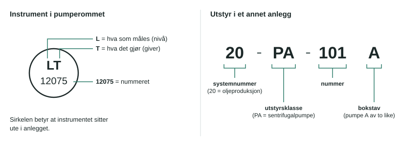

Instrumenter og tagnummer
Alt i en P&ID har et tagnummer: hver pumpe, hver tank, hver ventil og hvert instrument. Tagnummeret er navnet på tingen. Det står på tegningen, på skiltet ute i anlegget og på skjermen i kontrollrommet. På denne siden lærer du å lese tagnumrene i pumperommet.
Fire slags tagnummer
I P&ID-en for pumperommet finner du fire slags tagnummer:
| Hva | Eksempel | Slik leser du det |
|---|---|---|
| Utstyr | P-12003, T-12051 | Bokstaven sier hva slags utstyr det er: P er pumpe, og T er tank. |
| Ventiler | V-12030, LCV-12032 | V er en manuell ventil. LCV er en reguleringsventil for nivå. |
| Rør | W-12133-80-16 | Linjenummeret sier hva som går i røret, nummeret, dimensjonen og trykklassen. |
| Instrumenter | LT 12075, PI 12066 | Bokstavene sier hva som måles og hva instrumentet gjør. Tallet er instrumentets nummer. |
Alle tagnumrene i pumperommet begynner med 12. Det er systemnummeret for pumperommet, og det viser at alt hører til samme anlegg. Tallene etter 12 skiller tingene fra hverandre.
Instrumentene
Et instrument tegnes som en sirkel med tagnummeret inni. Bokstavene står øverst, og nummeret står under.

Første bokstav sier hva som måles, for eksempel L for nivå, F for mengde, P for trykk og T for temperatur. Bokstavene etter sier hva instrumentet gjør, for eksempel T for giver, I for viser, C for regulator og A for alarm. En tabell over de vanligste bokstavkodene, og hva sirklene betyr, finner du på siden Instrumentsymboler og P&ID i temaet Automasjon.
Eget nummer eller felles sløyfenummer?
I pumperommet har hvert instrument sitt eget nummer, også når instrumentene hører til samme regulering. Nivågiveren LT 12075 og reguleringsventilen LCV-12032 har for eksempel ulike tall. Mange andre anlegg bruker et felles sløyfenummer: Alle instrumentene i samme måling eller regulering får samme tall, for eksempel TT 105, TIC 105 og TCV-105 i kjøleanlegget du møter senere i emnet. Symbolforklaringen sier hvilket system tegningen bruker.
Instrumentene i pumperommet
| Tagnummer | Hva det er | Hvor det sitter |
|---|---|---|
| LT 12075 | Nivågiver. Sender nivået til regulatoren. | Tank 1 |
| LA 12077 | Nivåalarm for høyt nivå (H) | Tank 1 |
| LZ 12076 | Nivåbryter for høyt-høyt nivå (HH). Stopper pumpe 2 og 3. | Tank 1 |
| LZ 12078 | Nivåbryter for lavt nivå (L). Gir alarm. | Tank 1 |
| LT 12080 | Nivågiver. Sender nivået til styringen av pumpe 1 og til regulatoren når tank 2 er valgt. | Tank 2 |
| LA 12082 | Nivåalarm for høyt nivå (H) | Tank 2 |
| LZ 12081 | Nivåbryter for høyt-høyt nivå (HH). Stopper alle tre pumpene. | Tank 2 |
| LZ 12083 | Nivåbryter for lavt nivå (L). Gir alarm. | Tank 2 |
| LIC 12094 og LIC 12097 | Nivåregulatorer som også viser nivået. De styrer reguleringsventilene LCV-12022 og LCV-12032. | I styresystemet |
| FZ 12071–12073 | Strømningsvakter. Merker om det strømmer for lite vann inn til pumpene (LL). | Innløpet på pumpe 1–3 |
| PI 12064–12066 | Trykkindikatorer (manometre). Viser trykket etter pumpene. | Utløpet på pumpe 1–3 |
| PT 12051 | Trykkgiver. Måler lufttrykket til ventilene og gir alarm i kontrollsystemet hvis trykket blir for lavt. | Trykkluftledningen |
I pumperommet brukes Z for brytere som er koblet til sikkerhetssystemet. Mange anlegg bruker S for bryter i stedet, for eksempel LSHH for en nivåbryter ved høyt-høyt nivå, slik du ser i Automasjon. Sjekk symbolforklaringen. Noen av bryterne stopper pumper, og andre gir alarm. Hva hver bryter gjør, står i forriglingsmatrisen.
L, LL, H og HH
Ved mange instrumenter står det en eller to bokstaver som viser en grense:
- H (høyt) og L (lavt): Verdien er utenfor det normale. I pumperommet gir dette en alarm i kontrollrommet, slik at operatøren kan gripe inn.
- HH (høyt-høyt) og LL (lavt-lavt): Verdien er så høy eller lav at det kan bli farlig eller føre til skade. Da griper sikkerhetssystemet inn av seg selv. I pumperommet stopper det én eller flere pumper. Hvilke, står i forriglingsmatrisen.
Hva som skjer ved hver grense, står i forriglingsmatrisen. Den lærer du om i neste emne.
Andre anlegg, andre tagnummer
Hvert firma har sitt eget system for tagnummer. Tagnummeret til høyre i figuren er bygd opp slik mange olje- og gassanlegg gjør det. Det begynner også med et systemnummer, her 20, som viser hvilken del av anlegget utstyret hører til. Så kommer en kode på to bokstaver for hva slags utstyr det er, for eksempel PA for sentrifugalpumpe. Til slutt kommer nummeret, og en bokstav hvis det finnes flere like. Pumpe A og pumpe B er da to like pumper der den ene kan ta over for den andre.
Derfor gjelder det samme som for symbolene: Sjekk symbolforklaringen. Den forklarer også hvordan tagnumrene er bygd opp.
Kontroller alltid at tagnummeret på skiltet ute i anlegget er det samme som på tegningen og i arbeidsordren, før du åpner, stenger eller kobler ut noe. Mange pumper og ventiler ser like ut. Det er tagnummeret som forteller at du står ved riktig.
Test deg selv
1. Hva er PI 12066?
- En pumpe
- En trykkindikator, et instrument som viser trykket
- Et rør
P betyr trykk, og I betyr at instrumentet viser verdien. 12066 er instrumentets nummer.
2. Hva forteller første bokstav i et instrumenttagnummer?
- Hva som måles
- Hvem som har montert instrumentet
- Hvor i anlegget det sitter
Første bokstav sier hva som måles, for eksempel L for nivå. Bokstavene etter sier hva instrumentet gjør.
3. Ved en nivåbryter står det HH. Hva skjer i pumperommet når nivået når denne grensen?
- Det kommer bare en melding på skjermen
- Sikkerhetssystemet stopper én eller flere pumper
- Ingenting, HH er normalt nivå
HH betyr høyt-høyt. Da griper sikkerhetssystemet inn av seg selv. Ved H kommer det bare en alarm.
4. I et annet anlegg heter en pumpe 20-PA-101B. Hva betyr B?
- At pumpa er i dårlig stand
- At det finnes flere like pumper, og at dette er pumpe B
- At pumpa pumper bensin
Bokstaven til slutt skiller like utstyrsdeler fra hverandre, for eksempel pumpe A og pumpe B.
5. Du skal stenge V-12030. Hva gjør du før du stenger?
- Ser etter den ventilen som ligner mest
- Sjekker at skiltet på ventilen viser V-12030
- Spør en kollega om det er riktig ventil
Mange ventiler ser like ut. Tagnummeret på skiltet er den sikre måten å vite at du står ved riktig ventil.
Ordliste
| Begrep | Forklaring | Engelsk |
|---|---|---|
| tagnummer | Den faste merkingen til en utstyrsdel eller et instrument, for eksempel en pumpe eller en nivåmåler. Den står både i skjemaet og på utstyret i anlegget. | tag number |
| bokstavkode | Bokstavene i et tagnummer. Første bokstav sier hva som måles, og bokstavene etter sier hva instrumentet gjør. | instrument letter code |
| sløyfenummer | Tallet i et tagnummer. Alle instrumentene som hører til samme måling eller regulering, har samme sløyfenummer. | loop number |
| systemnummer | Første del av et tagnummer. Det viser hvilket anlegg eller hvilken del av anlegget utstyret hører til. | system number |
| strømningsvakt | En bryter som merker om det strømmer for lite i et rør, for eksempel inn til en pumpe. | flow switch |
Les mer
- Instrumentsymboler og P&ID i temaet Automasjon: alle bokstavkodene og instrumentsymbolene.
- Fra prosessflytskjema til P&ID viser instrumentene på pumpe 3 og tank 1.
Om kildene: Teksten og figurene på denne siden er laget for dette nettstedet. Eksemplene bygger på det tekniske flytskjemaet og forriglingsmatrisen for pumperommet ved Sauda vgs og på symbolforklaringer som brukes i undervisningen. Siden bygger på undervisningsopplegg i kjemiprosess- og laboratoriefag ved Sauda vgs, som er utarbeidet med utgangspunkt i blant annet Kjemien stemmer, Laboranten og åpne nettkilder.